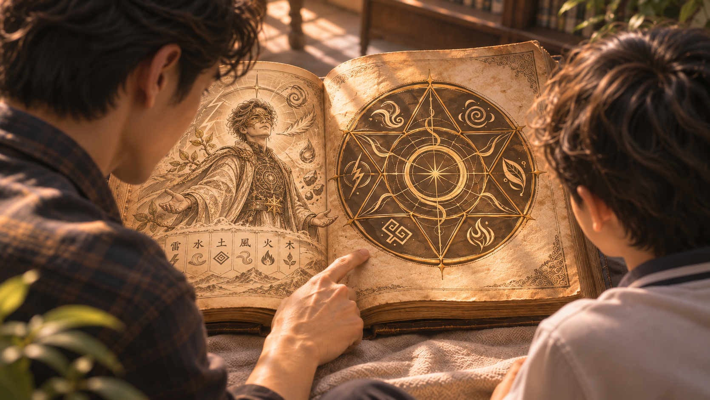
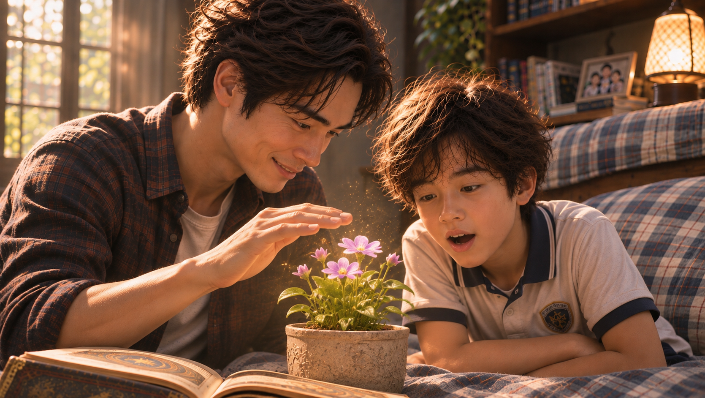
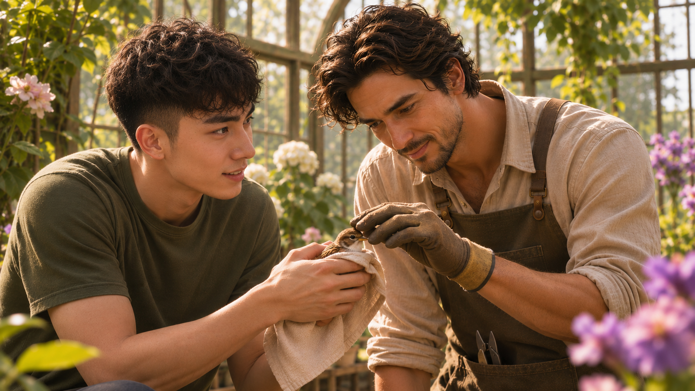
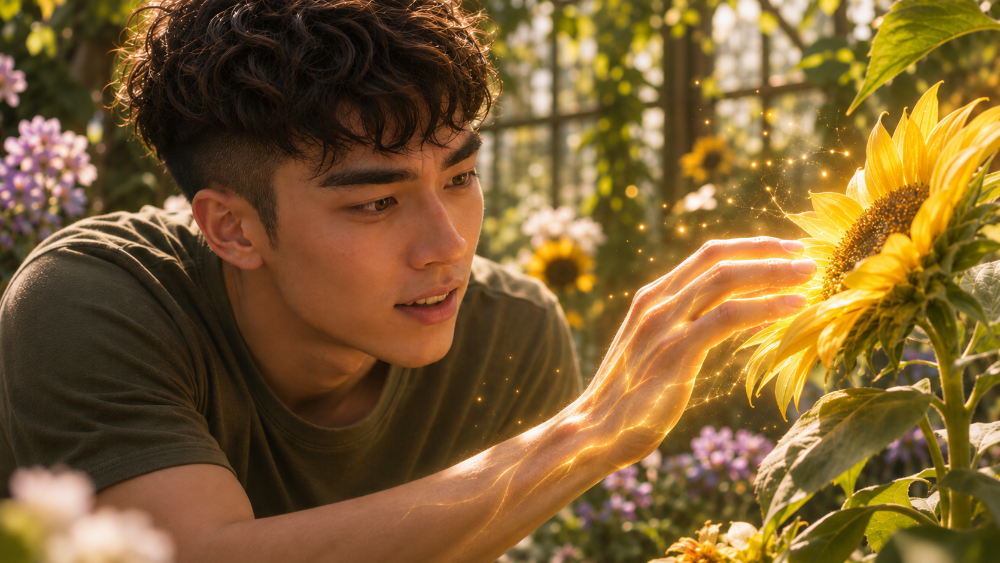

WHITE MAGIC ART STUDIO
第八章
床邊故事
「起初，當世界仍是一片虛無時，創造萬物的神降下六種神聖元素——雷、水、土、風、火、木。」

「隨著神的一聲令下，六種元素開始相互流動，經過六天，世界逐漸成形。」
「神創造了人類，將這個美好的世界交託給他們管理，讓他們享受祂所賜予的一切。」
「然而，墮落天使撒但因嫉妒人類而來到世上，開始迷惑人心，引誘人類背離神的旨意。牠甚至利用人類墮落所產生的黑暗力量，創造出惡魔大軍，企圖使人類遺忘神起初所賜下的美好。」
「仁愛的神為了保護人類，便將創世時的六種神聖元素，分別賜予六位祂所揀選的人類。」
「這六位守護者獲得了超越凡人的力量，能夠施展如魔法般的『聖術』，與惡魔對抗。」
「神命令他們暗中守護人類，而這份神聖的力量，也隨著世代傳承，延續至今。」
景皓讀到這裡，輕輕闔上繪本的一部分，望向身旁的昱鎧。
「所以，昱鎧。」
「嗯？」
「你跟爸爸，就是繼承了其中『木』之力的聖術師後裔。我們梁家世代都有機會繼承這份力量，成為木之聖術師。」
景皓停頓片刻，故意露出一本正經的表情。
「也就是說——你不是忍者。」
昱鎧眨了眨眼。
「……」
「你是聖術師！」
「所以……」
昱鎧的眼睛逐漸亮了起來。
「你真的會施展魔法？」
景皓笑了。
「你看好了。」
他將稍早帶進房間的盆栽放到床邊，從口袋取出幾顆種子，輕輕撒進土裡。
接著，他將手掌懸在盆栽上方，緩緩移動。
昱鎧屏住呼吸。
只見原本平靜的泥土微微隆起。
一株嫩芽破土而出，接著抽長、舒展，翠綠的葉片一片片展開。
最後，枝頭綻放出一朵小花。
整個過程，不過短短幾秒。

「哇……」
昱鎧忍不住湊近。
「太酷了吧！」
景皓看著兒子驚訝的表情，忍不住露出得意的笑容。
「我們家族繼承的木之力，象徵生命、平衡與治癒。所以除了操控植物，也特別擅長施展治療傷口的聖術。」
昱鎧望著那朵花，腦中突然冒出一個問題。
「爸，那如果火之聖術師跟土之聖術師結婚，他們的小孩會不會同時有兩種力量？」
「問得好！」
景皓豎起食指。
「不過，聖術師最多只能繼承一種神聖元素。就算父母分別來自不同的聖術師家族，孩子也只會隨機繼承其中一方的力量。」
「那一定會繼承嗎？」
「不一定，也有可能完全沒有。」
昱鎧想了想，點點頭。
「這樣好像滿公平的。」
「不過……」
景皓故意壓低聲音。
「這個世界上，確實曾經出現過同時擁有六種神聖元素之力的聖術師。」
「六種？！」
昱鎧猛地抬頭。
「那不是無敵了嗎？」
「差不多吧。」
景皓笑著翻開下一頁。
「因為那位聖術師，正是創造世界的神自己。」
繪本上，出現了一名身穿白袍的男子。
「當人類不斷背離神，甚至連原本應該守護人類的聖術師，也開始懷疑自己的使命時，神之子降世，成為人類，展開拯救世人的計畫。」
景皓的語氣不自覺地放輕。
「祂有許多名字，但我們習慣稱祂為『拉比』。」
「拉比？」
「意思是『老師』。」
景皓望著書頁。
「祂不只提醒聖術師們，真正的使命究竟是什麼，也教導我們如何理解聖術更深的奧祕。」
他翻到下一頁。
畫面上，三名聖術師並肩而立。
其中一人手持武器，一人身旁跟隨著靈獸，最後一人掌心則燃燒著火焰。
「例如這個。」
景皓指著圖案。
「在拉比的教導下，聖術師主要分成三種類型：術器使、靈獸使，以及元素使。」
「聽起來好厲害！」
「你叔叔景毅，還有你學校的班導師王詩涵，就是術器使。」
昱鎧整個人愣住。
「等一下！」
他猛地轉頭。
「王老師也是聖術師？！」
「相信我，我知道的時候也嚇了一跳。」
景皓無奈地笑了笑。
「術器使能召喚出專屬於自己的武器，並藉此施展獨特的聖術。有點像電影裡的魔法師，需要透過魔杖來發揮力量。」
「那王老師的武器是什麼？」
「一個黑色圓盤。」
「圓盤？」
「嗯，而且還滿危險的。」
景皓想起稍早在教師辦公室的情景，不禁苦笑。
「總之，你以後上課最好認真一點。」
昱鎧忍不住笑了。
景皓接著指向第二幅圖。
「靈獸使則能與靈界生物締結契約，將自己靈魂的一部分賦予選中的靈獸，使牠成為守護者，協助施展聖術。」
「就像召喚獸？」
「差不多。」
「那我們家有人是靈獸使嗎？」
「當然有。你在韓國的姑姑，身邊就有一隻非常漂亮的靈孔雀。」
「真的？！」
「不過，只有聖術師，或是相信聖術存在的人類，才能看見那些靈獸。」
昱鎧抱著繪本，滿臉期待。
「我突然好希望姑姑快點回來！」
「哈哈，等她回來，你自己問她。」
景皓將手指移向最後一幅圖。
「至於第三種，就是元素使。」
他拍了拍自己的胸口。
「也就是爸爸我。」
「你是元素使？」
「沒錯。元素使能比其他類型的聖術師，更熟練地操控自己所繼承的元素，甚至發展出獨一無二的天賦。」
景皓看向剛剛綻放的花朵。
「例如……」
他伸出手掌，輕輕一揮。
花瓣忽然泛起細微的光芒。
一點點金色光粒從花朵表面飄散而出，宛如被微風吹起的花粉，緩緩融入景皓掌心。
昱鎧看得目不轉睛。
「注意看。」
景皓抬起食指，朝兒子的方向輕輕一彈。
昱鎧明明沒有被碰到，肚子卻突然感受到一股輕柔的推力。
「哇！」
他下意識往後縮了一下。
「你剛剛做了什麼？」
「我能吸收不同花朵的精華，將它們轉化成自己的力量。」
景皓微微一笑。
「不同的花，會帶來不同的效果。有些能增強速度，有些能讓我跳得更高，甚至一口氣越過好幾棟房子。」
「真的假的！」
昱鎧興奮得差點從床上跳起來。
「那我呢？那我呢？」
「這個嘛……」
景皓摸了摸下巴。
「每個聖術師覺醒自身類型的時間都不一定，所以爸爸現在也不能確定。」
昱鎧有些失望。
「喔……」
「不過，我相信你一定會成為一位很優秀的聖術師。」
「為什麼？」
景皓沒有立刻回答。
他只是指了指兒子的眼睛。
接著，自己的雙瞳逐漸泛起翠綠色的光芒。
「因為你已經擁有一份非常特別的天賦了。」
「爸……」
昱鎧下意識往後縮了一點。
「你的眼睛……」
「跟你今天早上在鏡子裡看到的一樣，對吧？」
景皓微笑著。
「別怕。這不是生病，也不是什麼奇怪的詛咒。」
他輕輕握住兒子的手。
「這是木之聖術師特有的眼睛——『木瞳』。」
昱鎧低頭看了看他的手，又望向父親。
「所以我的眼睛……真的會變綠色？」
「嗯。木瞳能讓我們看見一般人無法覺察的生命流動與能量變化，也能提升視覺感知。」
景皓停頓了一下。
「而且，有些木之聖術師，還會覺醒與心智有關的特殊能力。」
「心智？」
「例如你今天遇到的事情。」
景皓看著兒子。
「明明沒有人開口說話，你卻能聽見他們的聲音，對吧？」
昱鎧一怔。
早上的教室、齊軒的書包，還有父親在學校突然提高的聲音，再次浮現在腦海中。
「……嗯。」
他低下頭。
「我真的聽到了。」
「爸爸相信你。」
景皓的回答讓昱鎧重新抬起頭。
「那些聲音不是從嘴巴發出來的，而是他們心裡正在想的事情。」
景皓指向兒子的眼睛。
「這就是你的木瞳術——讀心。」
「讀心術……」
昱鎧輕聲重複。
「所以我真的可以知道別人在想什麼？」
「是的。」
景皓點點頭。
「而且，爸爸以前也認識一位跟你擁有相同能力的木之聖術師。」
「真的？」
「嗯。這類能力非常稀有。」
景皓笑了笑。
「所以你確實很特別。」
昱鎧看著自己的雙手。
原本令他害怕的事情，突然變得有些不可思議。
只是那份興奮之中，仍夾雜著一點不安。
「那……我以後都會一直聽到別人在想什麼嗎？」
「不會。爸爸會慢慢教你控制木瞳。」
景皓的神情變得認真。
「不過，我們得先約法三章。」
「什麼？」
「等你學會控制之後，不可以隨便讀別人的心。」
「連你的也不行？」
「尤其是我的。」
「蛤——」
景皓忍不住笑了。
「讀心不是拿來偷看別人祕密的。每個人都有不想被別人知道的心事，爸爸也一樣。」
他稍微停頓。
「擁有能力，不代表可以隨心所欲。這關係到禮貌，也關係到信任。」
昱鎧想了想。
「……好啦。」
「這才乖。」
「那你的木瞳術是什麼？」
「我的能力，是感知視線範圍內生命的情緒與感受。」
「情緒？」
「嗯。開心、害怕、難過、生氣……只要我能看見對方，就有機會察覺。」
景皓故意挑了挑眉。
「所以，如果你偷偷讀我的心，說不定我也會發現喔。」
昱鎧突然恍然大悟。
「難怪我以前說謊，你都知道！」
「哈哈，也不是每次都靠木瞳術啦。」
景皓笑著揉了揉他的頭髮。
「你爺爺的能力才厲害。」
「爺爺也是木之聖術師？」
「當然。」
景皓的笑容淡了一點。
「他不只可以讀取別人的記憶，甚至還能操控、篡改。」
「篡改記憶？」
昱鎧睜大眼睛。
「那不就可以讓人忘記事情？」
「是啊。」
景皓望向窗外。
「你很難想像，我們小時候是怎麼被他管教的。」
昱鎧縮了縮肩膀。
「聽起來好可怕……」
景皓沒有接話。
過了片刻，他重新看向兒子。
「昱鎧，接下來爸爸要說的事情，你一定要記住。」
察覺父親的語氣改變，昱鎧也安靜下來。
「從你的木瞳覺醒開始，你的人生可能就會跟其他孩子不太一樣。」
景皓緩緩說道。
「你可能開始看見惡魔，甚至遇到比惡魔更加危險的存在。有一天，你也可能需要承擔某些責任。」
他輕輕握住兒子的肩膀。
「但這不是漫畫。現實中的聖術師，並不是每一次都能順利打敗敵人。」
昱鎧望著父親，沒有說話。
「還有一件事。」
「嗯？」
「你的聖術師身分，暫時不能告訴一般人。包括碧雲阿姨。」
「連碧雲阿姨也不行？」
「現在還不行。」
景皓認真地望著他。
「你能答應爸爸嗎？」
昱鎧猶豫了一下，最後點點頭。
「……我會努力。」
景皓輕輕摸了摸兒子的頭。
「謝謝你。」
他知道，自己或許還是太早讓昱鎧接觸這一切。
對一個十歲的孩子來說，惡魔、巫師，以及聖術師所背負的責任，都太過沉重。
但景皓也逐漸明白，有些事情不是只要不說，便能永遠替孩子擋在門外。
他不希望昱鎧像自己一樣，從小就被安排好人生。
至少這一次，他想試著讓兒子在理解真相之後，慢慢找到屬於自己的道路。
「爸爸！」
昱鎧的聲音打斷了他的思緒。
「嗯？」
「你還沒講完故事啦！」
昱鎧指向繪本最後一頁。
景皓低頭。
那幅畫中，一名身穿白袍、戴著金色半面具的男子，背後展開三對華麗的翅膀。
祂的身旁圍繞著六位戰士般的人物，正虔誠地向祂致敬。
「這個有六個翅膀的人是誰？」
「祂就是拉比。」
景皓望著畫面，輕聲回答。
「據說，拉比擁有三對非常美麗的翅膀。兩千多年前，當祂準備返回自己的國度時，便將六個翅膀分別賜予六位祂所愛的弟子。」
昱鎧專心地聽著。
「祂希望這六位弟子，能引領各自的聖術師家族，永遠記得守護人類的使命。」
景皓將手指移向畫中的六位戰士。
「因此，他們被稱為『翼聖術師』。」
「那他們現在還活著嗎？」
「最初的六位弟子早已離世。但直到今天，六大家族的每一代，仍會誕生新的翼聖術師，繼續引領聖術師們對抗黑暗。」
「那現在的翼聖術師在哪裡？」
昱鎧突然想到什麼。
「爸，你有見過他們嗎？」
景皓的手指停在書頁上。
「……見過。」
「真的？！」
「嗯。」
他沉默片刻。
「不過，那些事現在不重要了。」
昱鎧沒有繼續追問。
他只是重新望向書上的白袍男子。
「我也好想見到祂喔。」
「誰？翼聖術師嗎？」
「不是啦！」
昱鎧搖搖頭。
「我是說拉比！」
景皓微微一怔。
「為什麼？」
「因為……」
昱鎧想了一下。
「感覺祂人很好。」
「你又沒見過祂，怎麼知道？」
「因為你剛剛講到祂的時候……」
昱鎧看向父親。
「講話突然變得很溫柔。」
景皓愣住。
「……有嗎？」
昱鎧用力點頭。
景皓低頭望著繪本。
良久，嘴角才浮現一抹淡淡的笑意。
他確實曾經與拉比共度過一段非常美好的時光。
而那一切，要從十六年前的某個午後說起。
十九年前。
宜蘭，梁家大宅。
那年，景皓即將滿十七歲。
午後的陽光穿過玻璃花房，在石板步道上留下細碎的光影。
剛結束父親安排的訓練，景皓拖著疲憊的身體走進花院。
他本來只想來這裡透透氣，順便看看昨天帶回來的那隻小麻雀。
然而，才剛踏進花院，他便發現裡面多了一個陌生人。
那是一名看起來三十多歲的男子。
膚色微深，棕色短髮，留著整齊的短鬍。身上穿著樸素的園丁工作服，雙手戴著手套，正彎腰觀察一盆盛開的花。
景皓停下腳步。
「Excuse me？」
男子抬起頭。
「你是我爸請來整理花院的人嗎？」
因為對方深邃的五官，景皓很自然地改用英文詢問。
男子看著他，露出一抹笑容。
「你的英文很好。」
他說的卻是十分流利的中文。
景皓愣了一下。
「哇！」
他忍不住笑了。
「你是台灣人喔？中文也太標準了吧！」
男子微微聳肩。
「你希望我是，我就是。」
「哈哈，這什麼回答啦！」
景皓笑著搔了搔頭。
「不過我最近剛好在練英文，你讓我繼續用英文跟你講話好了。」
「當然可以。」
「所以，你真的是我爸請來的？」
「不。」
男子搖了搖頭。
「嚴格來說，是你母親邀請我來的。」
「原來是這樣。」
景皓沒有多想。
畢竟這座花院一直都是母親最重視的地方。
「對了。」
男子望向周圍的花草。
「如果你不介意，可以帶我認識一下這裡的花嗎？」
「當然可以！」
景皓立刻來了精神。
他領著男子沿著花院的小徑走去，開始介紹母親多年來栽種的各種植物。
從花朵的習性、照顧方式，到不同季節的開花時間，他幾乎都能說得頭頭是道。
男子一路聽著，偶爾停下腳步，仔細端詳某株植物。
「你真的很了解這些花呢。」
「還好啦。」
景皓笑了笑。
「都是我媽教我的。」
走到花院角落時，他突然想起什麼。
「欸，你等我一下喔。」
景皓快步走向一張擺滿園藝工具的木桌。
桌上放著一小包用柔軟布巾包裹的東西。
他小心翼翼地將布巾捧起。
裡面竟是一隻小麻雀。
男子走近。
「這是？」
「我昨天在家門口的大樹下撿到的。」
景皓輕輕掀開布巾。
「牠好像從樹上摔下來，受了傷。我就帶回來照顧。」
「牠現在還好嗎？」
「傷口應該已經痊癒了。」
景皓低頭看著小麻雀。

「可是很奇怪，今天牠還是飛不起來。」
男子望著他。
「你昨天才撿到牠，怎麼這麼快就讓牠痊癒了？」
「啊……」
景皓一怔。
糟糕。
說溜嘴了。
他總不能告訴一個普通園丁，自己昨天偷偷使用聖術治好了這隻麻雀吧？
「我是說……」
景皓正努力想著藉口，男子卻忽然開口。
「原來如此。」
「咦？」
「牠的翅膀骨骼似乎先天發育得不太完整。」
男子仔細看著小麻雀。
「昨天跌下來，恐怕是因為牠第一次嘗試飛行。」
景皓驚訝地抬頭。
「你怎麼知道——」
話還沒說完，他便停住了。
男子的雙眼，不知何時竟泛起翠綠色的光芒。
那是景皓再熟悉不過的顏色。
「……木瞳術？」
他睜大眼睛。
「你也是木之聖術師？」
男子笑了笑。
「嗯……不完全是。」
「不完全是？」
男子看向一旁的水瓶。
「木之聖術師，能做到這個嗎？」
他輕輕抬手。
瓶中的水忽然自行升起，化作一道透明的水流，緩緩飄浮到景皓面前。
景皓整個人愣住。
男子轉動手腕。
水流隨即分散成無數細小水珠，在陽光下閃閃發亮。
下一瞬間，水珠又化為淡淡的水氣，消散在空中。
「水……水之聖術？」
景皓難以置信地望著眼前的男子。
「怎麼可能？我爸明明說過，聖術師最多只能掌握一種——」
呼！
男子突然朝他輕輕吹了一口氣。
一陣強風迎面而來。
「哇啊！」
景皓猝不及防，整個人向後跌坐在地。
男子忍不住笑出聲。
「哈哈哈！抱歉、抱歉！」
「你……」
景皓坐在地上，滿臉震驚。
「你到底是誰啊？」
男子伸出手，想將他扶起。
然而，景皓並沒有立刻握住。
他的視線，落在男子戴著手套的手上。
「……等一下。」
景皓遲疑片刻。
「我可以看看你的手嗎？」
男子沒有拒絕。
景皓輕輕褪下其中一隻手套。
當那隻手出現在眼前時，他的呼吸忽然停了一瞬。
手背上，留著一道清晰的舊傷痕。
景皓抬起頭。
眼前的男子依然微笑著。
「……聖術師拉比？」
他幾乎是用氣音說出這個名字。
男子歪了歪頭。
「怎麼了？」
祂笑著問。
「見到我，不開心嗎？」
「不是！」
景皓連忙搖頭。
「只是……」
他看了看男子身上的園丁服，又看向那張親切的臉。
「你跟我想像中的……有點不一樣。」
拉比忍不住笑了。
「這句話，我怎麼覺得以後還會聽到很多次？」
祂重新伸出手。
這一次，景皓終於握住。
拉比溫柔地將他扶了起來。
景皓仍有些不敢相信。
「我……」
他張了張嘴。
「我有好多問題想問你。」
「沒關係。」
拉比望著他，眼神溫和。
「我們有的是時間。」
那是景皓第一次遇見拉比。
卻不是最後一次。
往後的幾個星期，拉比總會不時出現在花院裡。
有時，他陪景皓照顧花草；有時，兩人只是坐在花房外的長椅上，聊著一些再平凡不過的事情。
景皓也逐漸發現，拉比不只懂得許多父親從未教過他的聖術技巧，更是一位願意聆聽他心事的朋友。
在父親面前，他總是必須努力證明自己。
訓練是否達到要求？
能力是否有所進步？
是否足以承擔梁家未來的責任？
然而，在拉比面前，他似乎不必急著回答這些問題。
他可以談論自己喜歡的花，也可以抱怨今天的訓練太累。
甚至偶爾說些無聊的笑話。
拉比總會耐心地聽著。
直到某一天。
兩人坐在花院的長椅上。
景皓終於問出了那個一直藏在心裡的問題。
「拉比。」
「嗯？」
「所以……我真的是木翼嗎？」
拉比轉頭望向他。
「為什麼這麼問？」
「因為……」
景皓猶豫了一下。
「你說過，只有擁有你的『翼』的人，才能看見你，甚至像現在這樣跟你說話。」
「是啊。」
「可是……」
景皓低下頭。
「為什麼是我？」
拉比沒有立刻回答。
景皓繼續說道。
「我弟已經可以召喚自己的術器了，我爸甚至能創造出術之木。」
他看著自己的雙手。
「但我呢？」
「……」
「我沒有他們那麼厲害。」
景皓苦笑了一下。
「這樣的我，你不會後悔選我嗎？」
拉比靜靜望著他。
過了一會兒，他才輕聲問道：
「我的孩子。」
「嗯？」
「為什麼你會認為，自己必須擁有那些傑出的表現，才有資格成為木翼呢？」
景皓愣了一下。
「我……」
他想了想。
「我也不知道。」
景皓垂下眼簾。
「我只是覺得，我可能沒有你想像中的那麼好。」
拉比沒有急著反駁。
他只是望向花院。
「景皓。」
「嗯？」
「這座花院裡，你最喜歡哪一種花？」
「花？」
景皓有些摸不著頭緒。
他環顧四周。
「薰衣草吧……」
停頓片刻。
「不對，向日葵好像也不錯。」
他又看向另一側。
「啊，可是鬱金香也很好看……」
拉比笑了。
「很難選，對吧？」
「對啊。」
景皓無奈地搔了搔頭。
「太難了啦。每一種花都有我喜歡的地方。」
「是啊。」
拉比望著不遠處盛開的向日葵。
「如果向日葵長得跟薰衣草一模一樣，你還能欣賞到向日葵獨有的美好嗎？」
景皓沉默了。
「同樣地。」
拉比轉頭看向他。
「如果你變得跟你弟弟一樣，或是跟你父親一樣，我又該如何欣賞屬於景皓自己的美好呢？」
景皓抬起頭。
拉比的目光溫柔而堅定。
「你是我父親所創造的美好作品。」
他輕輕說道。
「他說你是美好的，你就是美好的。」
景皓怔怔地望著他。
「他說你是我的木翼，你就是我的木翼。」
拉比伸出手，輕輕摸了摸他的頭。
景皓沒有說話。
只是低下頭，慢慢露出一抹笑容。
過了好一會兒，他才輕聲開口。
「……好希望我也能像你一樣。」
「像我一樣？」
「嗯。」
景皓望著自己的雙手。
「像你這樣看待我自己。」
拉比微微一笑。
「那麼，景皓。」
他問道：
「你希望自己成為什麼樣的人？」
景皓想了一下。
又看向周圍的花。
「我想……」
他指向遠處的向日葵。
「我想像向日葵一樣，讓看見我的人都能獲得積極的力量。」
接著，他望向另一側的花圃。
「也想像鬱金香一樣，在不同的成長階段，展現出不同的面貌。」
景皓越說越投入。
「我還想嘗試很多不同的事情，讓別人看到不一樣的我。」
他笑了笑。
「還有好多好多。」
拉比忍不住笑出聲。
「你有點貪心喔。」
「哈哈！」
景皓也笑了。
「可是我只是老實回答啊。」
他重新望向那些花朵。
「如果可以，我不想把自己限制在某一種樣子裡。」
景皓停頓片刻。
「我想創造很多不同的可能性。」
他的目光逐漸明亮。
「也許……這樣的我，才是我真正想成為的自己。」
拉比靜靜看著他。
那雙溫柔的眼睛裡，似乎多了一絲欣慰。
「那麼……」
他緩緩開口。
「你所認為遙不可及的夢想，也許正是最適合成為你力量的東西。」
景皓愣住。
「什麼意思？」
拉比站起身。
「來，孩子。」
他朝景皓伸出手。
「把手給我。」
景皓有些疑惑，卻仍照著做。
拉比牽著他的手，來到一株盛開的向日葵前。
他輕輕將景皓的手掌放在花瓣上。
「閉上眼睛。」
景皓照做。
「試著感受這朵花帶給你的感覺。」
午後的微風吹過花院。
景皓閉著眼，靜靜感受指尖傳來的觸感。
起初，什麼也沒有發生。
然而下一瞬間——
一股從未感受過的溫暖，忽然沿著指尖流入他的掌心。
景皓猛地睜開眼。
只見向日葵的花瓣上，正緩緩飄散出無數細小的光點。
那些光點如同金色的花粉，輕輕穿過空氣，融入他的皮膚。

「這……」
景皓睜大眼睛。
「拉比，這是什麼？」
拉比只是微笑。
「如果你擁有了向日葵的『積極』……」
他望向花院裡其他盛開的花朵。
「那麼，再搭配些什麼，才能創造出你理想中的奇蹟呢？」
景皓怔住。
他還無法完全理解拉比的意思。
但他隱約感覺到，自己似乎碰觸到了某種從未發現的可能。
於是，他緩緩走向另一株花。
伸出手。
輕輕碰觸花瓣。
下一瞬間——
另一股截然不同的能量，流入他的掌心。
景皓睜大眼睛。
「……真的可以？」
他又試著碰觸第三種花。
不同的感受。
不同的力量。
每一朵花，彷彿都擁有屬於自己的語言。
而他，竟然能夠聽懂。
景皓的呼吸逐漸急促。
「拉比……」
他興奮地轉過頭。
「我想，我可以試試看——」
話還沒說完，他便愣住了。
身後空無一人。
拉比不知何時，已經離開了花院。
只剩午後的陽光，靜靜灑落在石板小徑上。
景皓站在原地。
低頭望著自己的雙手。
掌心裡，似乎仍殘留著那些花朵的溫度。
「……拉比？」
沒有人回答。
他重新望向眼前的花院。
良久，才慢慢露出笑容。
那一天之後，景皓再也沒有在花院裡見過拉比。
但祂所留下的教導，卻始終沒有離開。
景皓開始花費更多時間研究花朵。
他發現，不同的花擁有截然不同的精華力量。
而當兩種、甚至更多種花朵的精華彼此結合時，竟然能夠產生意想不到的效果。
有些組合能夠強化身體。
有些能夠改變動作的速度。
還有些，甚至能帶來原本無法想像的治癒效果。
而那隻始終無法飛行的小麻雀，也成了他第一個想要幫助的對象。
經過無數次嘗試，景皓終於發現，紫羅蘭與鳳凰木的精華結合，能夠幫助牠修復先天發育不全的翅膀。
那天，他帶著小麻雀來到花院。
輕輕攤開雙手。
小麻雀拍動翅膀。
起初還有些搖晃。
接著，牠終於離開了景皓的掌心。
飛向花院上方。
景皓仰起頭，看著那道小小的身影穿過午後的陽光。
他沒有立刻說話。
只是站在原地，久久望著天空。
直到那隻麻雀消失在樹梢之間，他才慢慢低下頭，看向自己的雙手。
那一刻，他終於明白拉比那天所說的話。
不同的花，能夠創造不同的可能。
而他也不必成為任何人的模樣。
他只需要找到屬於自己的道路。
那是景皓真正發現自己是一名元素使的日子。
也是他的元素使天賦——
「花語」